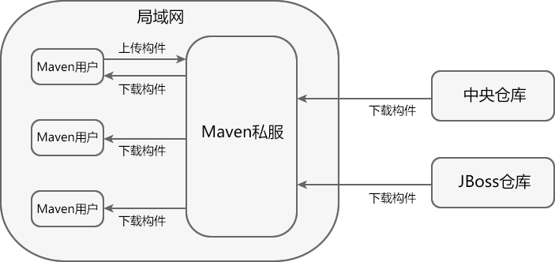

Maven私服
Maven 私服是一种特殊的远程仓库，它是架设在局域网内的仓库服务，用来代理位于外部的远程仓库（中央仓库、其他远程公共仓库）。
建立了 Maven 私服后，当局域网内的用户需要某个构件时，会按照如下顺序进行请求和下载。
此外，一些无法从外部仓库下载到的构件，也能从本地上传到私服供其他人使用。
下图中展示了 Maven 私服的用途。
建立私服后，即使外部网络状况不佳甚至中断，只要私服中已经缓存了所需的构件，Maven 也能够正常运行。
此外，一些私服软件（如 Nexus）还提供了很多额外控制功能，例如，权限管理、RELEASE/SNAPSHOT 版本控制等，可以对仓库进行一些更加高级的控制。
其中，Sonatype Nexus 是当前最流行、使用最广泛的 Maven 仓库管理器，您可以转到《Nexus教程》学习 Maven 私服的搭建流程。
建立了 Maven 私服后，当局域网内的用户需要某个构件时，会按照如下顺序进行请求和下载。
- 请求本地仓库，若本地仓库不存在所需构件，则跳转到第 2 步；
- 请求 Maven 私服，将所需构件下载到本地仓库，若私服中不存在所需构件，则跳转到第 3 步。
- 请求外部的远程仓库，将所需构件下载并缓存到 Maven 私服，若外部远程仓库不存在所需构件，则 Maven 直接报错。
此外，一些无法从外部仓库下载到的构件，也能从本地上传到私服供其他人使用。
下图中展示了 Maven 私服的用途。

图1 Maven 私服的用途
Maven 私服优势
Maven 私服具有以下 5 点优势：节省外网带宽
大量对于外部远程仓库的重复请求，会消耗很大量的带宽，利用 Maven 私服代理外部仓库后，能够消除对外部仓库的大量重复请求，降低外网带宽压力。下载速度更快
Maven 私服位于局域网内，从私服下载构建更快更稳定。便于部署第三方构件
有些构件是无法从任何一个远程仓库中获得的（例如，某公司或组织内部的私有构件、Oracle 的 JDBC 驱动等），建立私服之后，就可以将这些构件部署到私服中，供内部 Maven 项目使用。提高项目的稳定性，增强对项目的控制
如果不建立私服，那么 Maven 项目的构件就高度依赖外部的远程仓库，若外部网络不稳定，则项目的构建过程也会变得不稳定。建立私服后，即使外部网络状况不佳甚至中断，只要私服中已经缓存了所需的构件，Maven 也能够正常运行。
此外，一些私服软件（如 Nexus）还提供了很多额外控制功能，例如，权限管理、RELEASE/SNAPSHOT 版本控制等，可以对仓库进行一些更加高级的控制。
降低中央仓库得负荷压力
由于私服会缓存中央仓库得构件，避免了很多对中央仓库的重复下载，降低了中央仓库的负荷。Maven 私服搭建
能够帮助我们建立 Maven 私服的软件被称为 Maven 仓库管理器（Repository Manager），主要有以下 3 种：- Apache Archiva
- JFrog Artifactory
- Sonatype Nexus
其中，Sonatype Nexus 是当前最流行、使用最广泛的 Maven 仓库管理器，您可以转到《Nexus教程》学习 Maven 私服的搭建流程。
关注公众号「站长严长生」，在手机上阅读所有教程，随时随地都能学习。内含一款搜索神器，免费下载全网书籍和视频。

微信扫码关注公众号